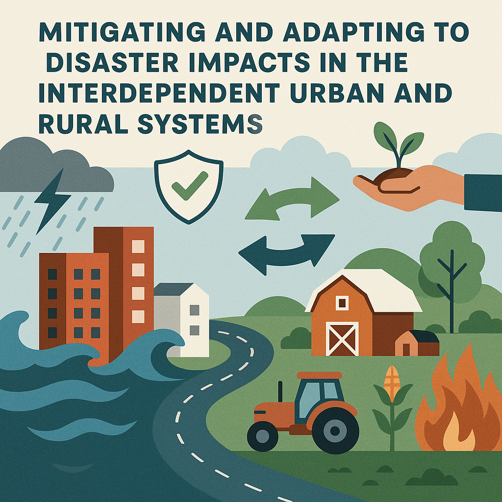
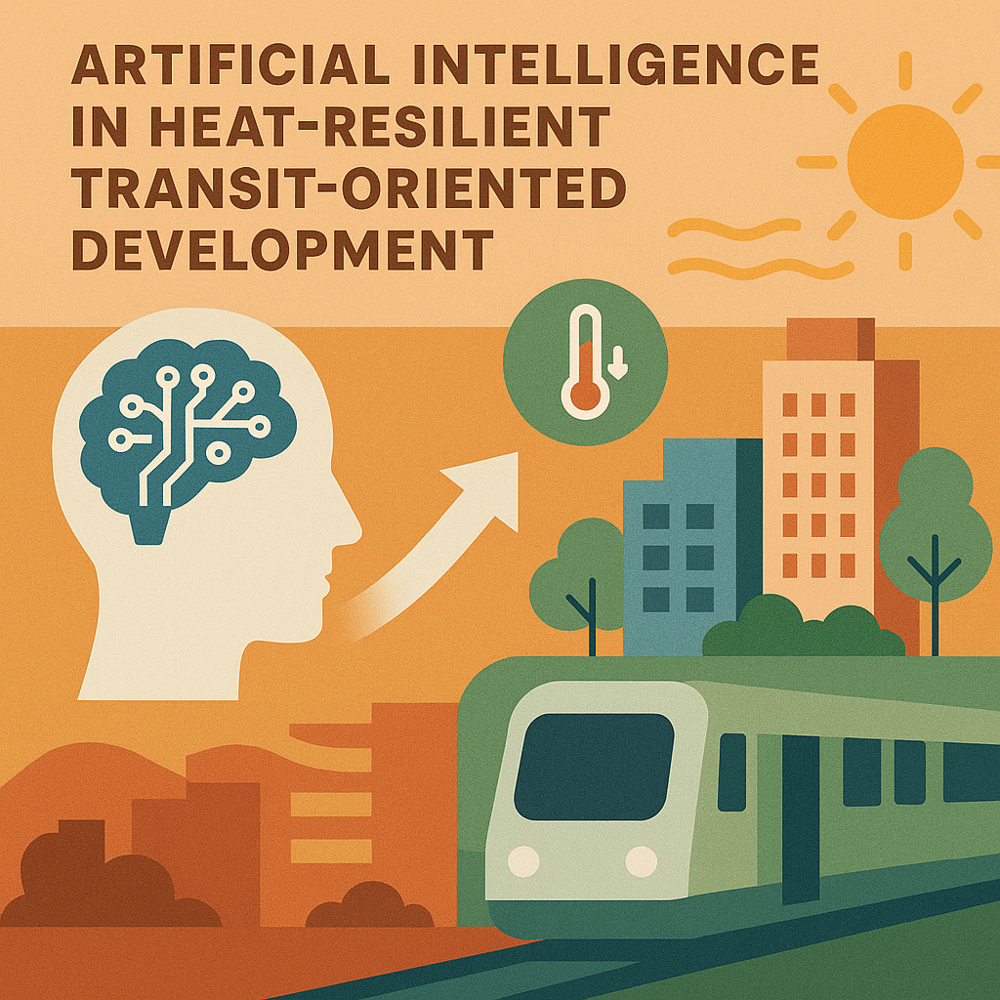

Sangung Park,
A Postdoctoral Researcher
At the University of British Columbia, I am exploring the frontiers of Disaster Science and Transportation Engineering.
Research Interests
Integrating Disaster Science and Transportation Engineering to Create Resilient Smart Cities and Rural Communities.
Disaster Data Science
Developing data-driven models and frameworks to predict and mitigate the impact of natural disasters, including hurricanes, extreme heat, and wildfires.
Transportation Engineering
Designing and implementing transportation infrastructure to improve safety, efficiency, and accessibility. Transit-Oriented Development.
Resilient Smart Cities and Rural Communities
Developing complex systems, systems dynamics, and agent-based models to improve the resilience of smart cities and rural communities.
Featured Projects
A selection of my recent work.

Mitigating and Adapting to Disaster Impacts in the Interdependent Communities
Develop a framework to identify critical transitions in post-disaster recovery to prevent failure.

Artificial Intelligence in Heat-Resilient Transit-Oriented Development
Apply artificial intelligence to improve heat resilience in transit-oriented development.
Autonomous Bus Planning in Disaster Management
Developing a framework for autonomous bus planning in disaster management.
Publications
Academic contributions and papers.
Post-disaster recovery policy assessment of urban socio-physical systems
Computers, Environment and Urban Systems
WebsiteSpatiotemporal heterogeneity reveals urban-rural differences in post-disaster recovery
npj Urban Sustainability
WebsiteAn agent-based model of post-disaster recovery in multilayer socio-physical networks
Sustainable Cities and Society
WebsiteHourly Long-Term Traffic Volume Prediction with Meteorological Information Using Graph Convolutional Networks
Applied Sciences
WebsiteGet In Touch
Let's discuss your next project or collaboration.
CV
11/30/2025 Updated.